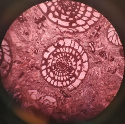
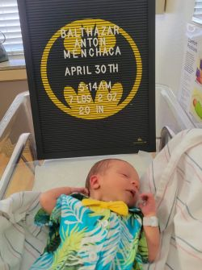

I was taking courses at Texas Tech going for a degree in geosciences when the COVID-19 hit and was switched to online classes. Shortly after the pandemic was in full swing my wife got pregnant and I needed to adjust my career goals that could be met in a more timely manner than wanting to get a masters degree and be in college for almost 3 more years. The course load was also becoming mostly online and I was not transitioning as well to trying to learn a physical science behind a computer screen.
That was when I saw an advertisement on Facebook about Lubbock Coding Academy and decided now was the time to jump into the course and get my career going to help achieve a rewarding career. I have always been interested into coding but I always thought it was like trying to learn a new language and always felt discouraged about it. Being in the course has helped me realize it is not and I have been enjoying myself learning to code and feel achieved when I figure out a problem that has been vexing me when doing the work.


Now our first born child is in the world and with being a first time father I am excited to see what heights I will reach with Lubbock Coding Academy. I am eager to see what else I will be learning through this course and can not wait on getting my career started!